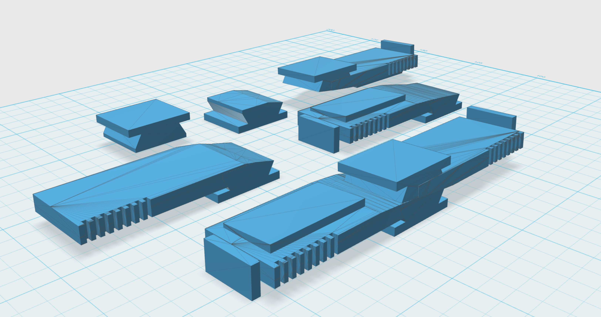
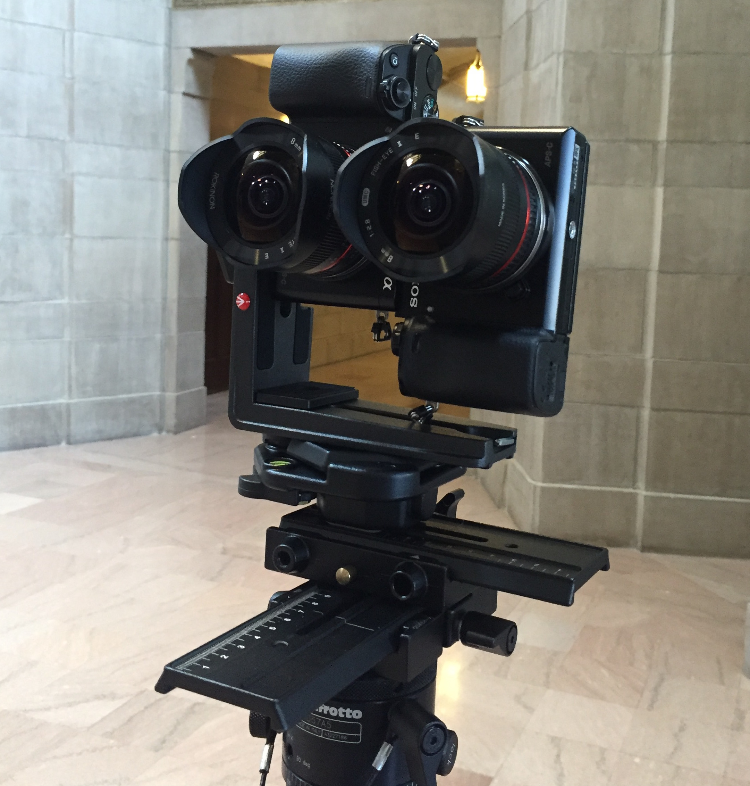
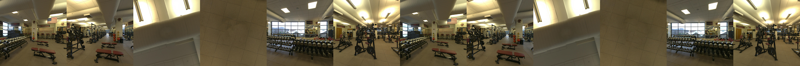

Boston College in Virtual Reality
After the success of the McMullen Museum of Art Virtual Reality experience, Boston College Ireland commissioned me to build a similar experience for visitors to Dublin for the 2016 ACC kickoff football game between Georgia Tech and Boston College. To push myself to make the experience more impressive than the McMullen's, I decided to shoot and stitch 3D, 360 degree panoramas instead of opting for the same monoscopic flat panorama I had done previously.
From the start, I knew that working in 3D would be quite the challenge. Due to parallax points associated with stitching spheres, the geometry of rotating stereo viewpoints and numerous other issues, getting this entire project in working order would be no small task. Meanwhile (even as recently as 2015), 360 stereo for live video/photo capture was a widely unsolved problem. And those who did have it solved such as Facebook weren't about to release their IP. Aside from capture, bringing the two channels of images into the graphics engine would cause additional concerns. I found some solid research on the web and began to prioritize. As each piece began to come together, the project as a whole seemed more feasible.
The camera Rig
I started with the camera rig. Without the assets for the content, this project was obviously headed nowhere fast. As mentioned, 3D/360 camera rigs such as Vuze didn't exist when I was building this project so I had to create my own solution. I picked up a pair of Sony a6000 mirorrless camers with matching fisheye lenses as these would be the two stero viewpoints.
Once I had the two cameras, I needed a way to connect them together by the hot shoe mount to stay together so that their lenses would be next to eachother. No consumer products for this sort of thing existed so I decided to 3D-print a part to match the specifications I needs. I measured the cameras down to the millimeter and learned how to build models in Autodesk 123D Design. Iterations of the plastic mount had to accompany for structural integrity of the part (the camera/lens combo is heavy) as well as IPD angles and distances. Shown are different iterations of the part (I used the serrating on the part's edges to get accurate measurements between tests). After countless broken parts and images that wouldn't stitch even remotely correctly, I finally found a solid working model to use as I shot the entirety of the panoramas.
Shooting and Stitching
 Shooting with the cameras was a relatively painless part of the process. Given that the cameras are positioned upright during shooting, I had to take six shots around to get coverage for a full panorama. Given how wide the lenses were, the nadir and zenith were picked up well enough by the cameras without having to rotate the rig up or down at all. I was certain to use the shoot/delay function in camera so that for longer exposures, there would be no vibration to damage image quality.
Once all of the images were shot in the ten different locations around BC's campus, I brought all of the images into PTGui for stitching and batch processing. Using the viewpoint correction tool in PTGui, I was able to account decently well for the fact that each individually was slightly off-center during shooting and would lead to inheret stitching errors. Where the viewpoint correction didn't find mathcing features, I brought the entire .psd file PTGui creates into Photoshop and manually skewed and shifted images to stitch them properly. The last step in PTGui I needed to carry out was to convert the image spheres into a cubic (six square images) format for quick and easy processing in realtime graphics engines. When all was said and done here, I had these six squares for each of the individual panoramas I shot. Keeping files organized and seprate from their L/R side equivalents was vital as I now had 120 images to keep track of. All that was left to do was bring them into a graphics engine to be able to bootstrap the panoramas along with the Oculus SDK for interactive stereo viewing.
Stereo Cubemaps for VR
Implementing a 2D cubemap as I did for the Irish VR project is a cinch in Unity. You simply create a new material as a cubemap, drag each of the six squares into place and let the skybox take in this material. Doing this for 3D was significantly more difficult however as the Unity SDK for the Oculus Rift at the time made accessing different components for each eye in the camera prefab difficult. I was able to produce a working version in Unity using some clever tricks such as culling masks, but the image quality was noticibly worse than the Oculus' resolution and the program would drop frames from time to time. I began to look into alternatives and abandoned Unity for Unreal Engine upon finding this project on Github by opamp7. The Stereo Cubemap Importer would handle importing images and projecting them properly for each independent eye. I took a quick course on Lynda to understand the basics of Unreal then dove in using the Stereo Cubemap Importer.
To get my cubic formatted images into Unreal, I had to convert them into a format known as the Carmack Cubic Strip, A 12:1 rato rectangle where each of the twelve squares from left to right were organized as follows: (left eye first) back horizontally flipped, front horizontally flipped, up rotated CCW 90º then horizontally flipped, down rotated 90º then horizontally flipped, left horizontally flipped, right horizontally flipped. The process then repeats for right eye leaving us with a Carmack Cubic strip for a scene.
Clearly, just the process of making these strips is a tedious one, so wrote a Python scripts to build the strips for me. I made sure that all of my files were properly named and in the right directories, then I ran the following script on them to build a strip saving days of work in Photoshop.

The Stereo Cubemap Importer handled a lot of the heavy lifting, but I did need to make some large adjustments to the project to get it to work with CV1 of the Oculus. Once I did however, just assigning the Xbox controller's buttons to next/prev to make cycling though the panoramas easy would complete the project. This only required a simple blueprint then the entire experience was ready for testing.
Testing this meant little more than bringing friends into the Rift, making sure each button work as needed and checking for gaps/poorly stitched sections of the panoramas. I eneded up needing to back into photoshop to make some tweaks so that L/R eye elements would line up better, but that was about it. Once all was said and done, I packed the machines up for Dublin, set it all up and got to watch BC Alumni jog their memory back and enjoy a virtual visit to their college glory days.